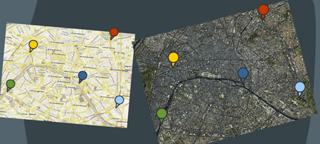
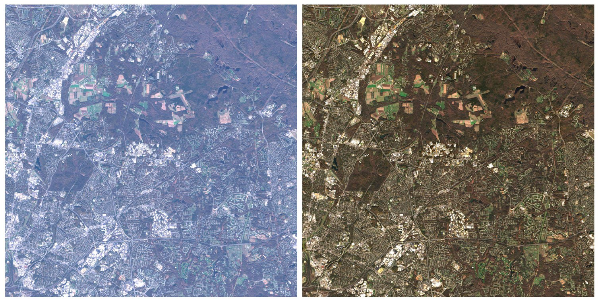
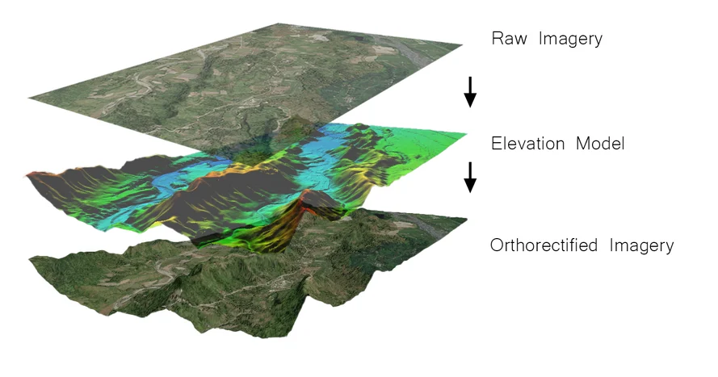
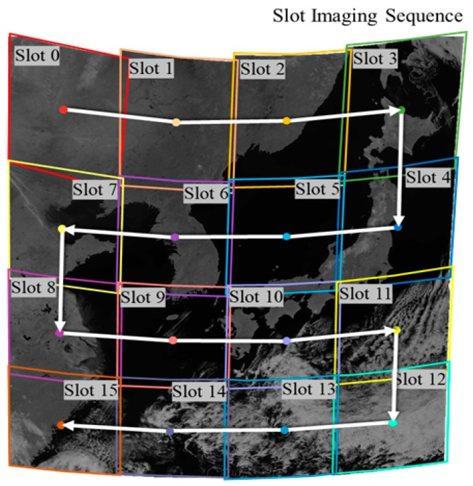

3 Corrections
3.1 Summary
Remotely sensed images sometimes may be flawed (due to the atmosphere, terrain, sensor, etc.) - there are various types of corrections that can be done and four of them - geometric, atmospheric, orthorectification/topographic, and radiometric calibration - will be discussed below.
3.1.1 Geometric correction
Identify Ground Control Points (GPS) to align identifiable points within the image with those in a reference dataset.
Derive geometric transformation coefficients by modeling the coordinates.
Next, we plot these points and aim to minimize the Root Mean Square Error (RMSE) (the model with the lowest RMSE will fit best), with Jensen defining a target RMSE value of 0.5.
Re-sampling the final raster is a must, methods are the following:
- Nearest Neighbour
- Linear
- Cubic
- Cubic spine

3.1.2 Atmospheric correction
Atmospheric correction is necessary when data concerns biophysical parameters as well as when using spectral signatures over time and space.
3.1.2.1 Atmospheric correction types
- Relative (to something):
- Dark object subtraction (DOS) or histogram adjustment: scanning each band to identify the darkest value and then subtracting it from every pixel.
- Pseudo-invariant Features (PIFs): assuming brightness pixels linearly relates to a base image - regression per band - modifying the image according to the regression outcome and applying this principle to the rest of the pixels.
- Absolute:
- Converting digital brightness values into scaled surface reflectance - allows for comparison of these scaled surface reflectance values globally and is achieved through atmospheric radiative transfer models.
- Requirements: an atmospheric model, local atmospheric visibility, image altitude.
- Empirical line correction:
- Going in situ and using a field spectrometer.

3.1.3 Orthorectification/topographic correction
Orthorectification is the process of correcting image distortions caused by terrain variations, ensuring accurate geometric representation of Earth’s surface in remote sensing imagery i.e., as if viewed from nadir. It requires sensor geometry and an elevation model.
Formulas to do this:
- Cosine correction
- Minnaert correction
- Statistical empirical correction
- C correction

3.1.4 Radiometric calibration
Sensors capture image brightness and distribute it as a Digital Number (DN), enabling efficient storage, albeit lacking units. Radiometric calibration is essentially the process if transforming DN to spectral radiance, i.e. the amount of light within a band from a sensor in the field of view (FOV). The process of radiometric calibration is crucial in remote sensing to ensure accurate and consistent measurement of electromagnetic radiation, enabling reliable interpretation and analysis of remote sensing data.
3.1.5 Disclaimer - or simply good news?
Remote sensing products are now provided in a ‘corrected’ format, such as ‘Analysis Ready Data’ (ARD) i.e., there’s no need to apply these corrections manually, however, it is necessary to know how remotely sensed data was created.
3.2 Applications
The two types of corrections I found most interesting personally were geometric and atmospheric, hence, the applications section will be dedicated to reviewing examples of research papers that have utilised them.
3.2.1 Geometric correction
(Kim, Son, and Kim 2018) published a study aimed to improve the accuracy of satellite data from ocean color sensors, like the Geostationary Ocean Color Imager (GOCI), by developing a new method for geometric correction. This was a critical gap in research to fill because traditional methods based on ground control points (GCPs) were ineffective in areas where shorelines were absent, presenting a challenge for accurately aligning satellite images. The researchers used a combination of shoreline matching and frequency matching techniques to correct the images. Their findings showed that this new method significantly improved the accuracy of the satellite data, demonstrating the importance of geometric correction in producing reliable and high-quality images for various applications, such as monitoring ocean health and environmental changes.

3.2.2 Atmospheric correction
(Sriwongsitanon, Surakit, and Thianpopirug 2011) carried out a study to investigate the impact of atmospheric correction and sampling point density on the precision of remote sensing in assessing lake water clarity. Field experiments were conducted at Bung Boraphet, the largest freshwater lake in Thailand, to gather data on clarity parameters and suspended sediment concentration. By applying atmospheric correction to satellite images, the authors identified substantial effects on the estimated values of water clarity parameters, the accuracy of which is crucial for assessing water quality, monitoring ecosystem health, and informing management decisions to protect freshwater resources.